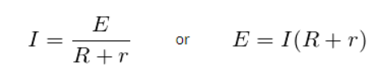

A Potentiometer is a tool used to evaluate the emf (electromotive power) of cells, to degree the inner resistance of a cell, and the P.D in the antagonist. It includes a protracted fence of separated location and 10 m long. Made of twine ought to have a excessive resistivity and a low temperature coefficient. The strings are stretched frivolously over every different on a wood board. The strings are tied in a sequence the use of thick copper strings. Measured with a meter scale on a wood board.
The precept of a potentiometer is that the capacity dropped throughout a section of a twine of uniform cross-segment sporting a steady modern-day is immediately proportional to its length.
You can use this Simulator to do this Activity
All the Instruction are in the Activity file
Potentiometer Simulator
The potentiometer is a device used to measure the internal resistance of a cell and is used to compare the EMF of two cells and potential difference across a resistor. The relation between potential difference, EMF, and internal resistance of a cell is given by
Internal Resistance is given by

The Internal Resistance of the cell in terms of L1 and L2 is given by
You can download Potentiometer Activity by clicking on download button
Potentiometer Activity